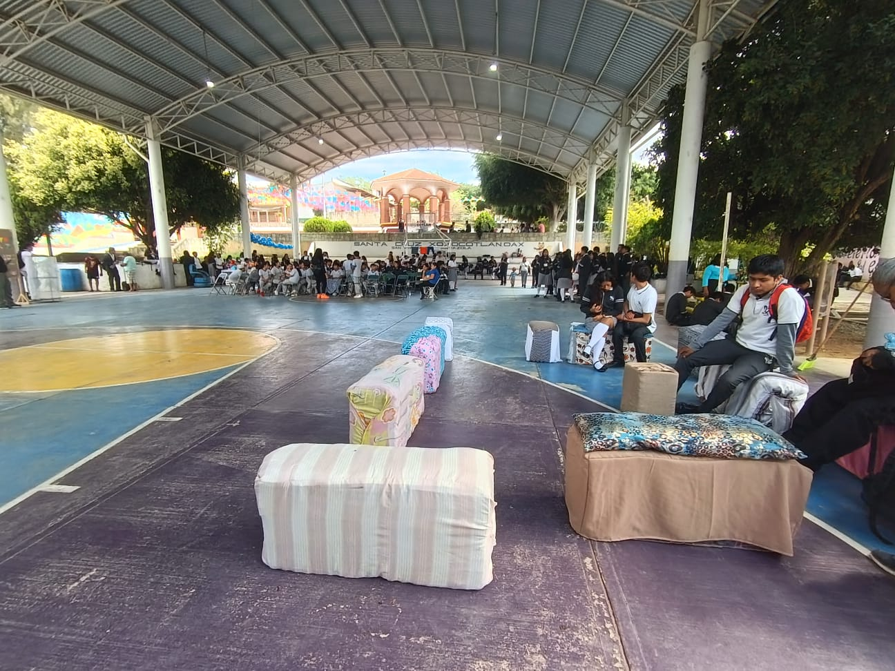
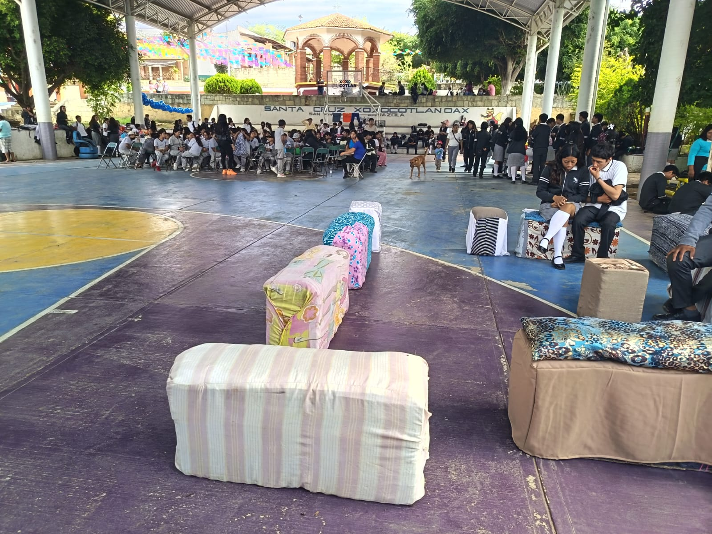
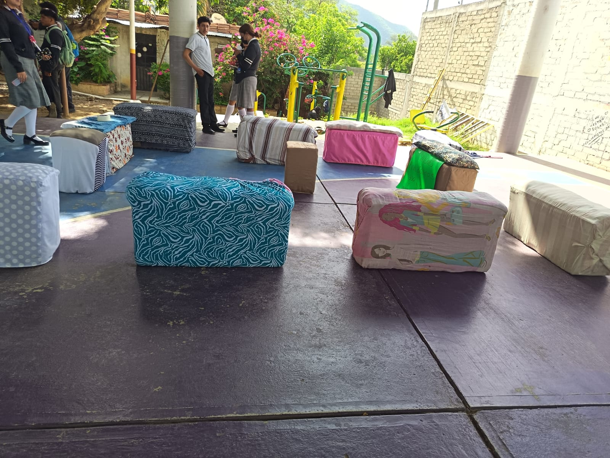
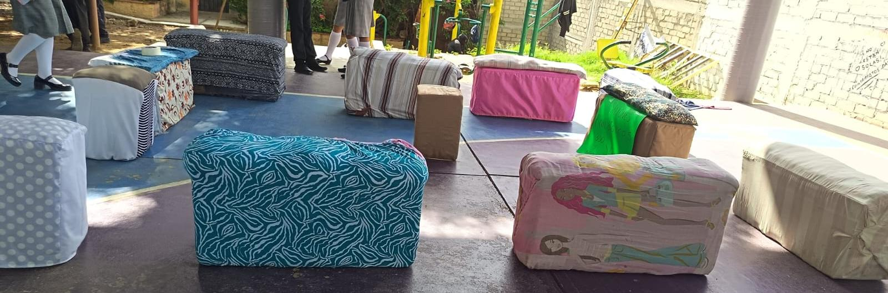

Para dar un segundo uso creativo a los materiales reciclados, diseñamos sillones originales construidos con conos de huevo. Esta iniciativa demuestra cómo es posible transformar residuos cotidianos en piezas de mobiliario funcionales y decorativas, fomentando la imaginación mientras se reduce el impacto ambiental y se promueve un consumo más responsable y sostenible.